<ion-toolbar color="dark">
  <ion-buttons slot="secondary">  
    <ion-button  (click)="presentAlert()">
      <ion-icon name="log-in"></ion-icon>
    </ion-button>
    <ion-button [routerLink]="['/authorized-user']">
      <ion-icon name="checkmark-circle-outline"></ion-icon>
    </ion-button>
    <ion-button  [routerLink]="['/user-denied']">
      <ion-icon name="close-circle-outline"></ion-icon>
    </ion-button>
  </ion-buttons>
  <ion-title>Interfaz / QR</ion-title>
</ion-toolbar>

<ion-content>

  <div class="logo">
    
  </div>
  <ion-card class="bg-white m-center-card">
    <ion-card-header class="header-m">
      <ion-card-title class="space-title">CODIGO QR</ion-card-title>
    </ion-card-header>
    <ion-card-content>
      <div class="center">
        
       </div>
      <ion-button class="button-c" (click)="scan()">Escanear QR</ion-button>
      {{code}}
    </ion-card-content>

  </ion-card>

</ion-content>
